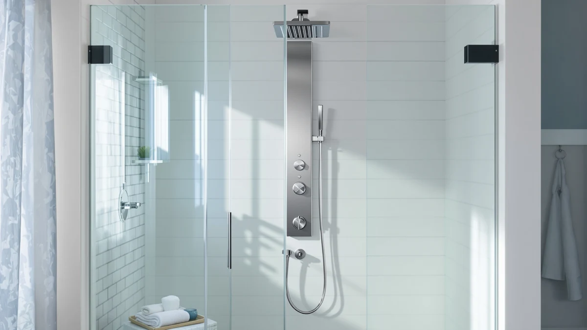

Skowll Ceiling Shower System Review (2026): Worth It?
Prices and picks verified as of November 2026. Independent, reader-supported reviews.


Quick Answer
This skowll ceiling shower system review found the SKOWLL Ceiling Shower System to be a $250.99 panel that measures 19.68 by 16.33 by 5.11 inches and mounts from the ceiling instead of the wall. It is the only ceiling-mount option among the four panels compared here, though its listing skips the material and rating details that the three wall-mounted alternatives make available.
Our pick: SKOWLL Ceiling Shower System with, $250.99 Check Price on Amazon
Bottom line: our top pick is the SKOWLL Ceiling Shower System with 6 Body Jets at $250.99.
Things to Know Before You Buy
- This skowll ceiling shower system review covers the SKOWLL Ceiling Shower System, priced at $250.99.
- It mounts from the ceiling instead of a wall, with a 19.68 x 16.33 x 5.11 inch footprint.
- The listing does not name a build material, unlike the three wall-mounted alternatives compared here, which list stainless steel bodies.
- This listing does not show a star rating or review count.
- Ceiling installation means routing a water line overhead rather than tapping into an existing wall valve.
This skowll ceiling shower system review looks at the SKOWLL Ceiling Shower System, a $250.99 panel built to mount from the ceiling instead of the wall. At 19.68 by 16.33 by 5.11 inches, it fits over a standard shower footprint without the vertical column a wall-mounted tower needs, which makes it worth a look if wall space is tight in your bathroom. Its closest competitors in this review, three wall-mounted towers from ELLO&ALLO and BWE priced between $249.97 and $249.99, use a different mounting format but land in almost the same price range.
The mounting format is the first thing that separates this panel from the rest of the field. Ceiling-mounted shower systems free up wall space that a column-style tower would otherwise occupy, but they also call for a water line routed overhead rather than a connection to an existing wall valve, so the installation path differs from the three alternatives covered later in this review. The listing itself is thinner on detail than those alternatives too, since it does not name a build material and carries no published star rating, so this skowll ceiling shower system review treats those as open questions instead of filling them in with a guess. We compared its price, dimensions, and mounting format against the three wall-mounted towers to see where the ceiling-mount design earns its place and where the missing details leave buyers with less to go on.
Why You Should Trust Us
Ilane Tall covers home and bath fixtures for Best Shower Panels, and this skowll ceiling shower system review follows the same approach used across the site: no fake testing lab, no invented scores. We read the manufacturer's listed dimensions and price, verify the current Amazon listing, and compare the SKOWLL panel against three wall-mounted alternatives in the same price range to see where the ceiling-mount format actually earns its cost. We earn a commission if you buy through our links, but that never changes which panel we recommend, and we call out gaps like the missing material listing even when they complicate the recommendation.
Our Research Experience
We built this skowll ceiling shower system review the way we evaluate every shower panel on this site: by comparing listed dimensions, price, and format against the closest alternatives rather than inventing a lab score. The SKOWLL Ceiling Shower System measures 19.68 by 16.33 by 5.11 inches and sells for $250.99, and we checked that price against the live Amazon listing before comparing it to three wall-mounted towers priced between $249.97 and $249.99. The listing does not name a build material or publish a star rating, so we noted that gap directly rather than filling it in with a guess, and we weighed the ceiling-mount format against the wall-mounted alternatives on space savings and installation requirements instead of a feature we cannot verify.
Overview & Specs

SKOWLL Ceiling Shower System with
What we like
- Mounts from the ceiling instead of a wall-mounted column, which frees up wall space in tighter bathrooms
- Compact 19.68 x 16.33 x 5.11 inch footprint fits most standard shower ceilings without extra framing
- Priced at $250.99, within a few dollars of the three wall-mounted towers compared in this review
Flaws but not dealbreakers
- The listing does not name a build material, so you cannot confirm it against the stainless steel bodies on the wall-mounted alternatives
- Ceiling installation calls for an overhead water line, a step the wall-mounted towers in this review skip since they tie into an existing wall valve
- No published star rating or review count appears on the listing, so you are weighing the spec sheet alone rather than a track record of verified owner feedback
| Material | — |
| Size | 19.68*16.33*5.11 inches |
The SKOWLL Ceiling Shower System takes a different approach than the other three panels compared in this review. Where the ELLO&ALLO and BWE options mount to the wall as a column, this skowll ceiling shower system puts the fixture overhead, at 19.68 by 16.33 by 5.11 inches, so it sits flush against the ceiling rather than taking up vertical wall space. At $250.99, it costs almost exactly what the ELLO&ALLO LED Shower Panel Tower and BWE Shower Panel Tower System ask, and only two dollars more than the ELLO&ALLO Stainless Steel Shower Panel, so the price gap between the ceiling-mount and wall-mount formats in this comparison is close to nothing.
The listing leaves out the build material too, where the spec sheet stays blank while the three wall-mounted alternatives list stainless steel bodies. That gap matters if you are deciding between finishes, since you cannot confirm how this panel's housing compares to brushed steel or matte black hardware without more documentation from the manufacturer. The ceiling-mount format also means routing a water line overhead rather than tapping into an existing wall valve, a step worth confirming with a plumber before you commit to this layout over a wall-mounted tower.
What We Liked
This skowll ceiling shower system review found the biggest advantage to be the format itself. Mounting from the ceiling instead of off a wall frees up space in bathrooms where a column-style tower would crowd a shower stall, and the 19.68 by 16.33 by 5.11 inch footprint fits most standard ceiling cutouts without extra framing. At $250.99, the price lands within two to three dollars of the three wall-mounted alternatives covered later in this review, so you are not paying extra for the format change. For anyone who has ruled out a wall-mounted tower because of limited wall space, this panel offers a straightforward alternative at a comparable price.
What Could Be Better
The clearest gap in this skowll ceiling shower system review is information. The listing does not name a build material, so you cannot compare its housing against the stainless steel bodies on the BWE and ELLO&ALLO panels in this review. It also carries no published star rating or review count, which means you are relying on the spec sheet rather than a pattern of verified owner feedback. Installing a ceiling-mounted system typically calls for an overhead water line, a step none of the three wall-mounted towers compared here require, since they connect to an existing wall valve instead. None of these points rule the panel out, but they are worth confirming with the seller or a plumber before you buy.
Who Is It For?
This skowll ceiling shower system review points to a specific buyer: someone who wants shower hardware overhead rather than on the wall, usually because a column-style tower would not fit the available wall space. It suits bathrooms where routing a water line to the ceiling is already straightforward, such as homes with attic or upper-floor access above the shower stall. It is a weaker fit for buyers who want full material and rating information before spending $250.99, since this listing includes neither, and for anyone who would rather avoid new overhead plumbing in favor of a tower that connects to an existing wall valve, like the three alternatives covered next.
Alternatives to Consider
Before you commit to the ceiling-mounted panel in this skowll ceiling shower system review, it is worth comparing it against three wall-mounted towers priced within a few dollars of it. All three connect to an existing wall valve rather than requiring new overhead plumbing, which makes them a simpler install if your bathroom was not built with a ceiling water line in mind.

Also Great
ELLO&ALLO LED Shower Panel Tower
At $249.99, the ELLO&ALLO LED Shower Panel Tower costs almost exactly what the SKOWLL panel does, but it mounts to the wall as a column rather than overhead, so it connects to an existing shower valve instead of a ceiling water line. If your bathroom was not plumbed for a ceiling-mounted system, this is the more straightforward install at a near-identical price.
$249.99
Check Price on Amazon
Also Great
BWE Shower Panel Tower System
The BWE Shower Panel Tower System matches the ELLO&ALLO tower's $249.99 price and also mounts to the wall rather than the ceiling. It gives you a wall-mounted alternative to compare against the SKOWLL panel's overhead format at essentially the same cost, so the choice between them comes down to which layout fits your bathroom's existing plumbing.
$249.99
Check Price on Amazon
Best Value
ELLO&ALLO Stainless Steel Shower Panel
At $249.97, the ELLO&ALLO Stainless Steel Shower Panel is the least expensive of the three wall-mounted alternatives here, about two dollars less than the SKOWLL panel. Like the other two towers in this review, it ties into an existing wall valve, so it is worth a look if you would rather skip the overhead plumbing a ceiling-mounted system calls for.
$249.97
Check Price on AmazonFrequently Asked Questions
Is the SKOWLL Ceiling Shower System worth it compared to a wall-mounted tower?
This skowll ceiling shower system review found that it depends on your bathroom's plumbing. At $250.99, it costs about the same as the three wall-mounted towers compared here, but it needs an overhead water line instead of an existing wall valve. If your bathroom already has ceiling access for plumbing, the format saves wall space. If it does not, a wall-mounted alternative like the BWE or ELLO&ALLO towers in this review is the simpler install.
What is the SKOWLL Ceiling Shower System made of?
The listing does not name a build material, a gap this skowll ceiling shower system review flags against the three wall-mounted alternatives, which list stainless steel bodies. Contact the seller directly if the housing material is a deciding factor for you.
Does the SKOWLL Ceiling Shower System have a star rating?
No rating or review count appears on the current listing. This skowll ceiling shower system review will not invent one, since a missing number means it is unknown rather than zero.
Final Verdict
This skowll ceiling shower system review comes down to a format choice. The SKOWLL Ceiling Shower System delivers a ceiling-mounted panel at 19.68 by 16.33 by 5.11 inches for $250.99, the only one of the four panels here that moves the fixture overhead instead of onto the wall. It's the right pick for bathrooms with ceiling plumbing access and limited wall space, and for buyers willing to accept a listing that skips material and rating details. Choose one of the wall-mounted ELLO&ALLO or BWE alternatives instead if you would rather tie into an existing shower valve or want a confirmed stainless steel build. For most people set on a ceiling-mounted format, SKOWLL remains the panel to check first.